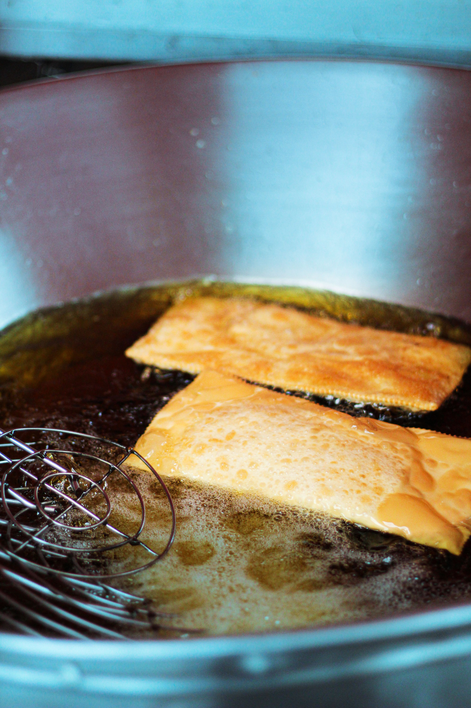

Pastel de Carne
Home

Descrição
O pastel de carne é um clássico da culinária brasileira, caracterizado por uma massa fina e crocante (frita ou assada) recheada com carne moída bem temperada e sequinha.
Ingredientes
- 1 kg de massa “pastel da feira” ou de sua preferência
- 2 colheres (sopa) de óleo
- 2 dentes de alho
- 1 tablete de caldo de carne de boa qualidade
- 1 kg de carne bovina de paleta bovina moída 2 vezes
- 1 cebola média
- 1 maço de cheiro verde
- sal a gosto
Passos
- Em uma panela com o óleo refogue a cebola e alho até dourar.
- Adicione a carne moída, quando começar a ferver adicione o caldo e mexa de vez em quando até toda a àgua secar, mexendo e desmanchando os torrões deixando a carne soltinha.
- Na medida que ela for enxugando mexa até que comece a fritar.
- Por último desligue o fogo e adicione o cheiro verde, corrija o sal ao seu gosto.
- Deixe esfriar e monte do seu jeito.
- Frite em óleo quente por um minuto, ou até que doure.